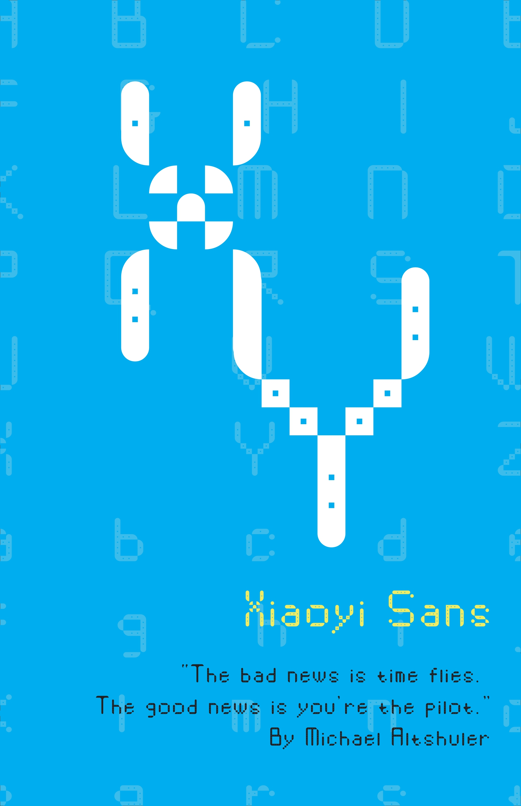
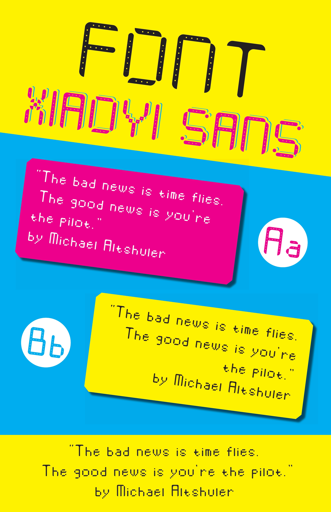
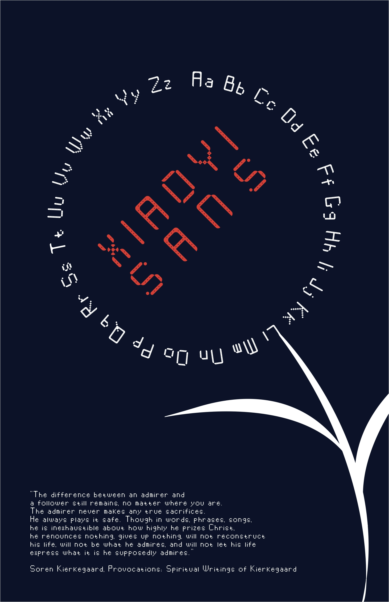

- About
- Class: Typography I
- Date: 2022 Fall
- Download: Cilck Me
- Web: fontstruct.com
- Font Application: Game Fonts
- Software: Adobe Photoshop & Adobe Indesign
- Poster elements: Aa-Zz words and quotes
In my Typography I class, I embarked on a creative journey to design a font that resonated with my aesthetic. Fond of the clean and modern look of sans-serif fonts, I decided to infuse this style into my font design project. Crafting each letter meticulously, I aimed for a balance between simplicity and elegance, ensuring that the uppercase and lowercase characters harmonized seamlessly. After countless iterations and refinements, I proudly unveiled my font design. With a desire to share my creation with others, I made the font available for download via a provided link, inviting fellow designers and enthusiasts to explore its versatility and potential applications. Eager to showcase the capabilities of my font design, I embarked on the creation of three distinct poster designs. Each poster served as a canvas to highlight the unique characteristics and visual appeal of the font across different contexts.

- ★ The first poster design serves as a captivating blend of typography, color, and symbolism, delivering a powerful message while paying homage to personal identity and aspirations.
- ★ Embedded within the design, the quote "The bad news is time flies. The good news is you're the pilot." by Michael Altshuler encapsulates a profound truth about the nature of time and personal agency. It reminds viewers that while time may be fleeting, they possess the ability to chart their own course and shape their destiny. This message resonates deeply with the theme of the poster, reinforcing the idea that life is a journey to be embraced and navigated with purpose and intention.
- ★ Finally, the inclusion of the initials "XY" serves as a personal touch, imbuing the design with a sense of identity and individuality. The design of the letter "X," reminiscent of a propeller or fan, adds a playful and whimsical element to the composition, further enriching its visual appeal and narrative depth.
- ★ In summary, the first poster design is a masterful fusion of typography, color, and symbolism, weaving together elements of personal identity, aspiration, and empowerment. Through its bold visual aesthetic and poignant message, it invites viewers to reflect on the nature of time, agency, and the power of choice in shaping their own life journey.

- ★ This font design serves a dual purpose: functionality and nostalgia. Crafted with mobile interfaces in mind, its clean lines and legible characters make it ideal for use in text dialog boxes, ensuring a seamless user experience. The sans-serif style lends itself well to digital platforms, providing clarity and readability on screens of all sizes.
- ★ Inspired by the iconic game, the color palette of yellow, red, and blue evokes memories of retro gaming consoles. These vibrant hues inject a playful energy into the design, adding a touch of whimsy to an otherwise utilitarian font. The dot hollows within the letterforms pay homage to the classic Pac-Man game, serving as a subtle nod to gaming history while maintaining a modern aesthetic.
- ★ In keeping with the theme of simplicity, the design opts for a minimalist approach. Each character is meticulously crafted with clean lines and well-defined shapes, ensuring clarity and legibility even at small sizes. By eliminating unnecessary embellishments, the font achieves a timeless quality that is both versatile and enduring.
- ★ Overall, this font design strikes a balance between form and function, offering both practicality and nostalgia in equal measure. Whether used in mobile interfaces or on digital platforms, its clean lines, vibrant colors, and subtle references to gaming history make it a standout choice for designers seeking to infuse their projects with a sense of playfulness and charm.

- ★ The last poster design is a captivating homage to the beauty of nature and the artistry of The Flowers of Evil manga, weaving together elements of typography and symbolism to create a visually stunning composition.
- ★ At its heart lies a unique and innovative concept: the use of Aa-Zz words to form delicate petals, radiating outward from a central focal point. This intricate arrangement transforms the alphabet into a mesmerizing floral motif, evoking a sense of whimsy and wonder. The font name, cleverly integrated into the design as the "flower core," serves as a subtle yet poignant reminder of the font's origins and purpose.
- ★ In terms of color palette, the design embraces a minimalist approach, utilizing only white, black, and red hues to evoke a sense of drama and contrast. This deliberate choice of colors imbues the composition with a sense of intensity and depth, drawing viewers into its captivating embrace. The bold use of red, in particular, adds a vibrant splash of color to the otherwise monochromatic palette, symbolizing passion, vitality, and the ephemeral beauty of life.
- ★ In summary, the last poster design is a masterful fusion of artistry, symbolism, and storytelling, inviting viewers on a journey of exploration and discovery. Through its intricate typography, minimalist color palette, and thought-provoking message, it captures the essence of beauty, transformation, and the eternal cycle of life and death within the petals of a single flower.